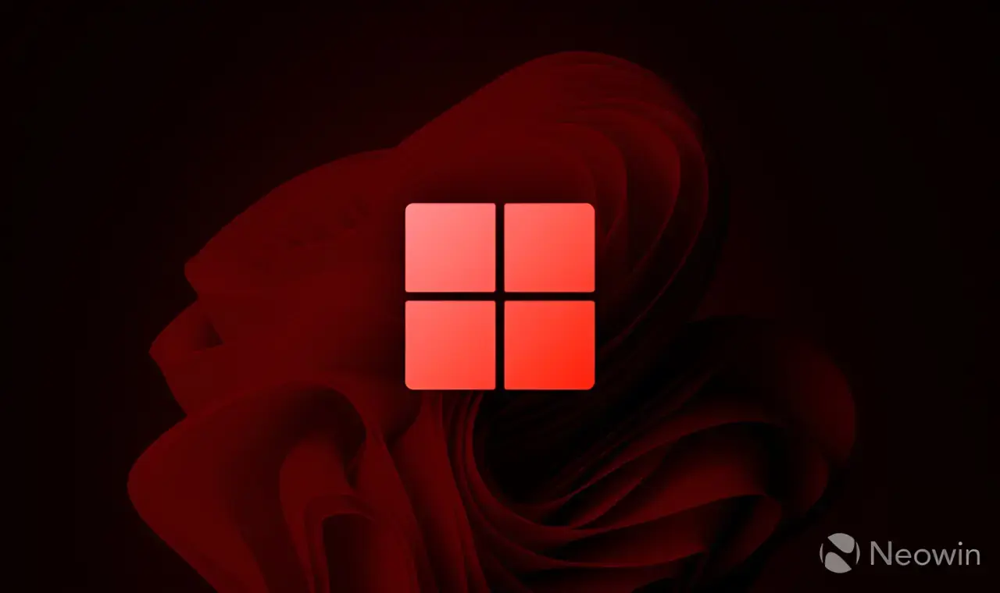

최신 Windows 11 패치 화요일 업데이트가 배포되었음
늘 그렇듯 여러 사용자들이 다양한 문제로 분노를 토하는중
해당 업데이트는 KB5121003임
일부 AMD GPU 사용자는 업데이트 이후 그래픽 드라이버 버그가 발생했고 안타깝게도 롤백도 효과가 없다고함
레노버 랩탑 혹은 완제품 데탑에서 AC 전원이 무작위로 차단되기도 한다는데 이거는 패치 롤백으로 해결된다고함
HP노트북의 경우 저업데이트를 설치할경우 바이오스가 손상됨(...)
증상은 업데이트이후 재부팅 할경우 기본 부팅 이미지(HP로고)에서 그대로 시스템이 뻗어버림
해당증상이 포럼쪽에 퍼지자, HP쪽에서 BIOS 업데이트 버전인 F.07 Rev.A를 배포하였다는데 이걸로 바이오스 판업하고 업데이트를 설치하면 바이오스 손상되지않았다고함
USB 오디오장치 혹은 DAC이 시스템상에서 인식불가,드라이버손상도 발생하는중인데, 해당 버그는 안전모드로 컴퓨터 부팅후 해당장치 출력을 2CH로 바꾸면 정상동작한다고함
한줄요약 : 가면 갈수록 증상도 기괴해지는 마소 업데이트 버그. 그냥 패치를 하지말아다오 무슨OS업데이트했는데 바이오스가 깨지냐 컴붕이 트러블슈팅하다가 탈모오겠다

NT 커널 진짜 징하게 우러먹는다 ㅋㅋ